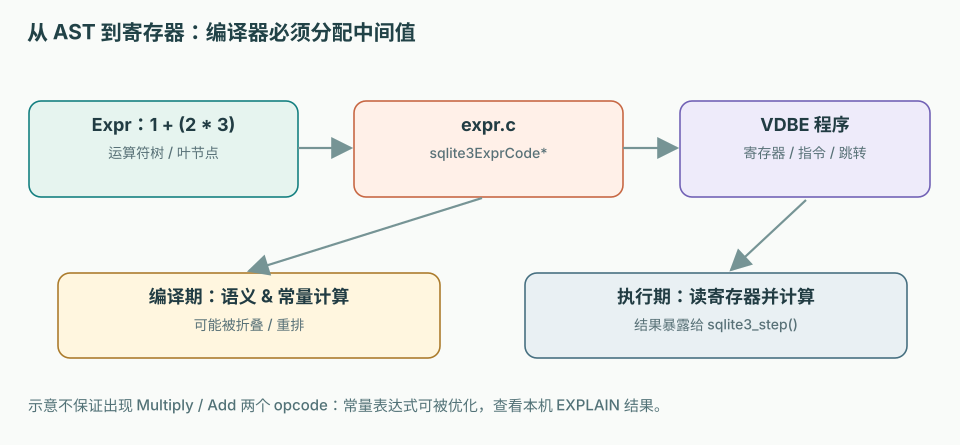
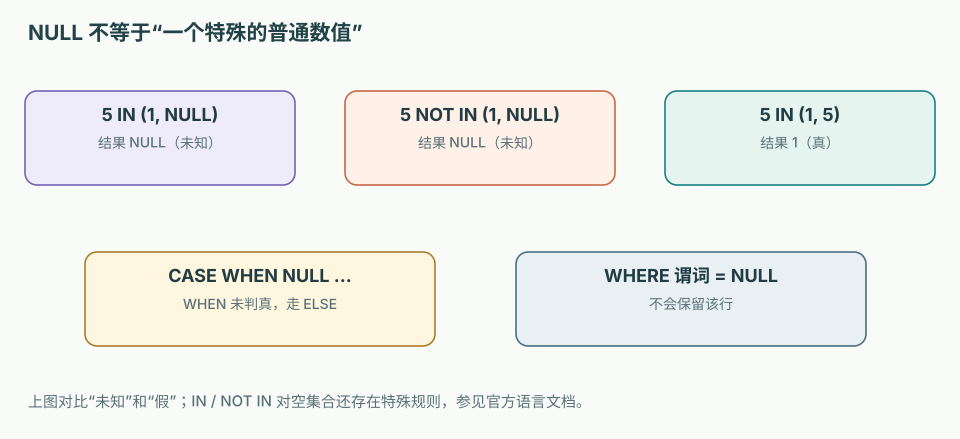
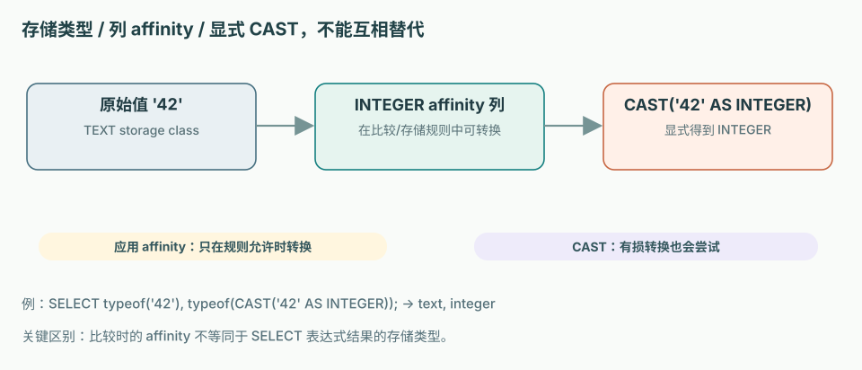

表达式编译：Expr 如何变成寄存器、跳转与结果
SQL 表达式不只是一个计算器：它涉及 AST、名称解析、类型亲和性、三值逻辑、控制流跳转和可重排的 VDBE 指令。一步一步弄清哪些发生在 prepare，哪些在 step。
阅读提示：可轻点图解打开独立矢量原图；窄屏图解支持横向查看细节。
1. 为什么解析出的 Expr 树不能直接做计算？
考虑 SELECT price * quantity + 2 FROM orders WHERE price > ?1;。Parser 能知道乘法、加法、比较的语法关系，但真正执行 SQL 还需要知道列从哪个游标读、参数放在哪个槽、当前行是否通过 WHERE、结果保存在哪个寄存器以及如何返回给 C API。
这就是表达式代码生成的任务。SQLite 的 expr.c 包含表达式分析和生成相关实现，select.c、where.c、wherecode.c 会在适当时机调用它，生成 VDBE 指令。官方 架构文档明确将 expr.c 列为代码生成的重要组成部分。

2. Expr、名字解析和寄存器：三次不同的“绑定”
以 WHERE price > ?1 为例：语法分析识别 > 的左右操作数；名称解析把 price 关联到有效的表、列或表达式上下文；参数分析给 ?1 分配绑定参数的位置。然后代码生成器才能根据访问路径决定应该从哪个游标读取列，使用寄存器还是跳转指令。
2.1 语义树上的“节点”与 VDBE 上的“寄存器”不同
| 层次 | 对象 | 主要职责 |
|---|---|---|
| 解析结构 | Expr / ExprList | 表达运算符与子表达式关系 |
| 分析上下文 | Parse / 名称上下文 | 语义检查、绑定列与参数、组织生成状态 |
| 指令生成 | sqlite3ExprCode* 等函数族 | 选择计算/跳转，安排寄存器 |
| 执行期 | VDBE 寄存器与游标 | 承载值、读取记录、比较并返回行 |
sqlite3ExprCode() 是阅读 expr.c 的常见入口，但不能说“每一种表达式都只需递归调用同一个函数”：有些条件会走跳转路径，一些运算可被常量折叠，某些子查询或 IN 可能需要临时结构和专用生成方法。表达式树本身不是实际执行的寄存器数组。
3. 用 EXPLAIN 检验表达式代码生成
第一步用可以独立验证的算术表达式观察“值”与“字节码”，不要先假设 SQLite 必然逐个按语法树节点执行操作。以下 SQL 既有常量表达式也有参数，足以说明何时进入 prepare，何时在 step 绑定参数。
-- 在 sqlite3 CLI 中运行：
SELECT 1 + 2 * 3 AS result; -- 7
EXPLAIN SELECT 1 + 2 * 3 AS result; -- 版本相关字节码
EXPLAIN SELECT ?1 + 2 * 3 AS result; -- 参数读入路径
-- 参数值由 C API sqlite3_bind_* 在 step 之前绑定对比生成的 opcode 时请观察读值 → 计算 → 返回三个职责，而不是把某一个 opcode 行号写进教材的断言。即使 EXPLAIN 显示了某种稳定的循环结构，也不能证明 SQLite 在所有未来版本都沿相同顺序执行。SQLite opcode 官方文档对此有说明。
4. IN、NOT IN 与 NULL：为何不能用二值逻辑编译
SQL 的条件不仅有真和假，还可能为 UNKNOWN（未知），在 SQLite 查询结果中通常表现为 NULL。当右侧集合包含 NULL 且左值没有匹配项时，5 IN (1,NULL) 不是 0，而是 NULL；5 NOT IN (1,NULL) 同样不是 1。

-- examples/10_expressions.sql 的核心检验
SELECT 5 IN (1, NULL) IS NULL AS in_unknown; -- 1
SELECT (5 NOT IN (1, NULL)) IS NULL AS not_unknown; -- 1
SELECT 5 IN () AS in_empty; -- 0
SELECT 5 NOT IN () AS not_in_empty; -- 1
SELECT CASE WHEN NULL THEN 'yes' ELSE 'no' END; -- no注意空列表是 SQLite 的一条特殊规则，IN () 结果为假，NOT IN () 结果为真，即使其中涉及 NULL 也需要按官方定义理解。不能仅通过“遍历右侧集合，找不到就返回 false”实现一般 IN；更复杂的 IN/子查询还可能涉及行值、NULL 标志及索引或临时表。参见 SQL expression 文档的 IN 部分。
4.1 CASE 为何需要控制流
对于 CASE WHEN condition THEN a ELSE b END，只有被选中的结果分支需要求值，SQLite 的 CASE 求值具有惰性/短路语义。代码生成必须保障程序的跳转与结果传播，否则一段未选中的表达式也可能错误地产生副作用或异常。对于带基表达式的 CASE x WHEN ...，基表达式有自己的求值规则；不要与 searched CASE 混淆。
5. 列亲和性、存储类别与 CAST 不是一套概念
SQLite 的值有运行时storage class（NULL、INTEGER、REAL、TEXT、BLOB）；列可以声明一个type affinity（例如 INTEGER/NUMERIC/TEXT/REAL/BLOB）。比较表达式会在特定条件下施加 affinity；显式 CAST 则遵从其强制转换规则。

SELECT typeof('42'), typeof(CAST('42' AS INTEGER));
-- text | integer
SELECT 42 = '42' AS no_column_affinity;
-- 0（两侧均无列 affinity）
CREATE TABLE t(n NUMERIC);
INSERT INTO t VALUES('42');
SELECT typeof(n), n = '42' FROM t;
-- integer | 1（插入和比较涉及 NUMERIC affinity）
SELECT CAST('123e+5' AS INTEGER);
-- 123：INTEGER CAST 读取整数前缀，而不是计算指数上面的比较非常关键：42 = '42' 不会因为“看起来都是 42”就自动变成真；在列亲和性的参与下，n = '42' 则可能按数值比较。详细规则来自 官方 SQLite 类型文档，而 CAST 的细节来自 SQL 表达式规范。
6. 从类型规则回到实际编译器：可复现实验
新增 examples/10_expressions.sql 及 C API 版本 examples/10_expr_prepared.c，从固定的表达式结果到绑定参数进行检查。
#include <stdio.h>
#include <string.h>
#include <sqlite3.h>
int main(void) {
sqlite3 *db = 0;
sqlite3_stmt *stmt = 0;
if (sqlite3_open(":memory:", &db) != SQLITE_OK) return 1;
const char *sql =
"SELECT CASE WHEN ?1 IS NULL THEN 'missing' "
"WHEN ?1 IN (1,2) THEN 'in' ELSE 'other' END;";
if (sqlite3_prepare_v2(db, sql, -1, &stmt, 0) != SQLITE_OK) {
sqlite3_close(db); return 2;
}
if (sqlite3_bind_int(stmt, 1, 2) != SQLITE_OK) return 3;
int rc = sqlite3_step(stmt);
const unsigned char *value = (rc == SQLITE_ROW)
? sqlite3_column_text(stmt, 0) : NULL;
int ok = value && strcmp((const char*)value, "in") == 0;
sqlite3_finalize(stmt);
sqlite3_close(db);
return ok ? 0 : 4;
}sqlite3 :memory: < examples/10_expressions.sql
cc -std=c11 -Wall -Wextra -Werror examples/10_expr_prepared.c -lsqlite3 -o /tmp/10-expr
/tmp/10-expr该实验展示参数绑定发生在准备语句之后，VDBE 在执行期间依据实际参数决定 CASE 分支。它不能证明任何固定的 opcode 排列；若要继续研究，先保存版本号再使用 EXPLAIN 并追踪 expr.c 的相应代码生成路径。
实验后的三个反事实
- 若参数改为 NULL，CASE 应返回什么？
- 若右侧 IN 列表加入 NULL 且无匹配，结果是否仍可简单地取反？
- 若用列
n NUMERIC替换常量42，文本比较为什么可能变化？
自测：对比“Expr 树”和“VDBE 寄存器”的一句话定义
Expr 树表达一段 SQL 计算的语义依赖；VDBE 寄存器和指令是编译完成后用于真正运行这段语义的执行状态与操作序列。优化可以改变序列，但必须保留 SQL 的可观察语义。
下一章会进一步研究 VDBE 执行循环、opcode 与寄存器的生命周期。
来源与版本边界
表达式结果是公开 SQL 语义；代码生成函数、opcode 数量和寄存器分配属于 SQLite 内部实现。图中仅表示运算依赖，不应从中推导跨版本稳定指令序列。
- Architecture: Code Generator · SQLite 官方原始资料
- SQLite SQL Language Expressions · SQLite 官方原始资料
- Datatypes in SQLite · SQLite 官方原始资料
- SQLite Bytecode Engine · SQLite 官方原始资料
- Expression Indexes · SQLite 官方原始资料